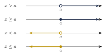
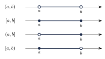

Capítulo 12
Desigualdades
UNAMIPNCENEVAL
Una desigualdad compara dos expresiones mediante una relación de orden. A diferencia de una ecuación, su conjunto solución suele contener un intervalo o una unión de intervalos. En este capítulo estudiarás las propiedades de las desigualdades, la notación de intervalos y los procedimientos para resolver desigualdades de primer y segundo grado.
12.1 Concepto de desigualdad#
Una desigualdad es una relación de orden entre dos expresiones matemáticas. Los símbolos utilizados son:
- \(<\) significa menor que;
- \(>\) significa mayor que;
- \(\leq\) significa menor o igual que;
- \(\geq\) significa mayor o igual que.
Interpreta las siguientes desigualdades:
Ver solución
- \(4<6\) se lee: “cuatro es menor que seis”.
- \(-3>-5\) se lee: “menos tres es mayor que menos cinco”.
- \(x\leq 2\) significa que \(x\) puede tomar cualquier valor menor o igual que \(2\).
- \(-6\leq x\) equivale a \(x\geq -6\).
- \(3<x<7\) significa que \(x\) es mayor que \(3\) y menor que \(7\).
Los símbolos \(<\) y \(>\) representan desigualdades estrictas, porque no incluyen la igualdad. Los símbolos \(\leq\) y \(\geq\) representan desigualdades no estrictas, porque sí incluyen la igualdad.
12.2 Propiedades de las desigualdades#
Sean \(a,b,c\in\R\).
Propiedad transitiva
Si \(a>b\) y \(b>c\), entonces: \[a>c.\]
Propiedad aditiva
Si \(a>b\), entonces: \[a+c>b+c.\]
Restar una misma cantidad en ambos miembros tampoco cambia el sentido de la desigualdad: \[a-c>b-c.\]
Multiplicación o división por un número positivo
Si \(a>b\) y \(c>0\), entonces: \[ac>bc\] y \[\frac{a}{c}>\frac{b}{c}.\]
Multiplicación o división por un número negativo
Si \(a>b\) y \(c<0\), entonces: \[ac<bc\] y \[\frac{a}{c}<\frac{b}{c}.\]
Al multiplicar o dividir ambos miembros de una desigualdad por un número negativo, el sentido de la desigualdad debe invertirse.
Por ejemplo:
La segunda desigualdad se obtiene al dividir ambos miembros entre \(-2\). Como el divisor es negativo, el símbolo \(<\) cambia a \(>\).
12.3 Intervalos#
Un intervalo es un subconjunto de los números reales comprendido entre uno o dos extremos.
En la notación de intervalos:
- los paréntesis indican que el extremo no está incluido;
- los corchetes indican que el extremo sí está incluido;
- los símbolos \(-\infty\) e \(\infty\) siempre se escriben entre paréntesis.
Las desigualdades que se extienden indefinidamente hacia uno de los lados de la recta numérica se representan de la siguiente manera:
- Si \[x>a,\] entonces: \[x\in(a,\infty).\]
- Si \[x\geq a,\] entonces: \[x\in[a,\infty).\]
- Si \[x<a,\] entonces: \[x\in(-\infty,a).\]
- Si \[x\leq a,\] entonces: \[x\in(-\infty,a].\]
Las cuatro situaciones anteriores pueden compararse en las siguientes rectas numéricas:

Si \(a<b\), las desigualdades dobles se representan mediante:
La inclusión o exclusión de los extremos puede visualizarse así:

En una recta numérica:
- un círculo vacío representa un extremo excluido;
- un círculo relleno representa un extremo incluido;
- una flecha indica que el conjunto continúa indefinidamente.
Los símbolos \(-\infty\) y \(\infty\) no representan números reales. Por ello, nunca se consideran extremos incluidos y siempre se escriben entre paréntesis.
12.4 Representación en la recta numérica#
Representa la desigualdad
en notación de intervalo y en la recta numérica.
Ver solución
Como \(-1\) no está incluido, utilizamos un paréntesis:
En la recta numérica se coloca un círculo vacío en \(-1\) y se traza una semirrecta hacia la derecha:
Representa la desigualdad
en notación de intervalo y en la recta numérica.
Ver solución
El extremo \(-2\) está incluido y el extremo \(2\) está excluido. Por tanto:
En la recta numérica se utiliza un círculo relleno en \(-2\) y un círculo vacío en \(2\):
12.5 Desigualdades de primer grado#
Para resolver una desigualdad de primer grado:
- elimina los signos de agrupación;
- elimina los denominadores, si los hay, utilizando un multiplicador común positivo;
- reduce los términos semejantes en cada miembro;
- reúne los términos con la variable en un miembro y los términos constantes en el otro;
- despeja la variable;
- si multiplicas o divides entre un número negativo, invierte el sentido de la desigualdad;
- expresa el conjunto solución mediante una desigualdad, un intervalo o una gráfica.
Resuelve:
Ver solución
Sumamos \(4\) en ambos miembros:
Dividimos entre \(3\). Como es un número positivo, el sentido de la desigualdad no cambia:
El conjunto solución es:
Resuelve:
Ver solución
Restamos \(2x\) y \(5\) en ambos miembros:
El conjunto solución es:
Resuelve:
Ver solución
Multiplicamos ambos miembros por \(6\). Como \(6\) es positivo, el sentido de la desigualdad no cambia:
Reunimos los términos con \(x\) en el primer miembro:
Dividimos entre \(-3\) e invertimos el sentido de la desigualdad:
El conjunto solución es:
Traduce el enunciado “Tengo a lo más $300” a una desigualdad.
Ver solución
La expresión “a lo más” indica una cantidad máxima que sí puede alcanzarse. Si \(x\) representa la cantidad de dinero, entonces:
Algunas expresiones frecuentes se traducen de la siguiente manera:
- “a lo más”, “como máximo” y “cuando mucho” indican: \[\leq;\]
- “al menos”, “como mínimo” y “por lo menos” indican: \[\geq;\]
- “más de” indica: \[>;\]
- “menos de” indica: \[<.\]
12.6 Clasificación según el conjunto solución#
Al simplificar una desigualdad, la variable puede eliminarse. La relación resultante permite determinar el conjunto solución.
Después de simplificar pueden presentarse los siguientes casos:
- Si se obtiene una desigualdad verdadera, como \[0<5,\] todos los números reales satisfacen la desigualdad.
- Si se obtiene una desigualdad falsa, como \[4<1,\] la desigualdad no tiene solución.
Resuelve:
Ver solución
Aplicamos la propiedad distributiva:
Restamos \(2x\) en ambos miembros:
La desigualdad es verdadera para todo número real. Por tanto:
12.7 Desigualdades de segundo grado#
UNAM
Una desigualdad cuadrática compara un polinomio de segundo grado con cero. Para resolverla se determinan los puntos en los que el polinomio vale cero y se analiza su signo en los intervalos que estos puntos producen.
Para resolver una desigualdad de la forma:
o con cualquiera de los símbolos \(<\), \(\geq\) o \(\leq\):
- se escribe la desigualdad con cero en uno de los miembros;
- se resuelve la ecuación asociada: \[ax^2+bx+c=0;\]
- se ordenan las raíces reales y se divide la recta numérica en intervalos;
- se determina el signo del polinomio en cada intervalo;
- se seleccionan los intervalos que satisfacen la desigualdad;
- si la desigualdad contiene \(\leq\) o \(\geq\), se incluyen las raíces; si contiene \(<\) o \(>\), se excluyen.
Supongamos que el polinomio
tiene dos raíces reales distintas:
Si \(a>0\), entonces:
- \(f(x)>0\) en \[(-\infty,x_1)\cup(x_2,\infty);\]
- \(f(x)<0\) en \[(x_1,x_2).\]
Si \(a<0\), los signos se invierten:
- \(f(x)<0\) fuera de las raíces;
- \(f(x)>0\) entre las raíces.
El patrón anterior supone que existen dos raíces reales distintas.
Si la ecuación asociada tiene una raíz doble, el polinomio no cambia de signo al atravesarla. Si no tiene raíces reales, el polinomio conserva el signo de su coeficiente cuadrático para todo número real.
Resuelve:
Ver solución
Factorizamos:
Las raíces son:
Como el coeficiente de \(x^2\) es positivo, el trinomio es positivo fuera del intervalo comprendido entre las raíces. Como la desigualdad es estricta, las raíces no se incluyen:
Resuelve:
Ver solución
Escribimos cero en el segundo miembro:
Factorizamos:
Las raíces son:
Como el coeficiente cuadrático es positivo, el polinomio es menor que cero entre las raíces. La desigualdad incluye la igualdad, por lo que se incluyen ambos extremos:
Resuelve:
Ver solución
Podemos factorizar directamente:
Las raíces son:
El coeficiente de \(x^2\) es negativo, por lo que el polinomio es positivo entre las raíces. Como la desigualdad contiene la igualdad, los extremos se incluyen:
Resuelve:
Ver solución
Factorizamos el trinomio:
Todo cuadrado es mayor o igual que cero. Por tanto:
solo se cumple cuando:
De aquí:
El conjunto solución es:
12.8 Ejercicios propuestos#
Resuelve y expresa la solución como intervalo:
Ver solución
\[10x - 12x > -2 + 8 \Longrightarrow -2x > 6 \Longrightarrow x < -3.\] Conjunto solución: \((-\infty, -3)\).
Resuelve:
Ver solución
\[12x - 3 < 6x + 21 \Longrightarrow 6x < 24 \Longrightarrow x < 4.\] Conjunto solución: \((-\infty, 4)\).
Resuelve:
Ver solución
mcm\((3, 2) = 6\). Multiplicamos: \[4x - 15 > 9x - 14 \Longrightarrow 4x - 9x > -14 + 15 \Longrightarrow -5x > 1 \Longrightarrow x < -\frac{1}{5}.\] Conjunto solución: \(\left(-\infty, -\dfrac{1}{5}\right)\).
Resuelve:
Ver solución
\[9x - 10 \geq 12x + 8 \Longrightarrow -3x \geq 18 \Longrightarrow x \leq -6.\] Conjunto solución: \((-\infty, -6]\).
Traduce el siguiente enunciado a una desigualdad:
Tengo al menos $200.
Ver solución
\(x \geq 200\).
Traduce el siguiente enunciado a una desigualdad:
La temperatura está entre \(20^\circ\text{C}\) y \(30^\circ\text{C}\).
Considera que ambos valores están incluidos.
Ver solución
\(20 \leq x \leq 30\).
UNAM
Resuelve:
Ver solución
Raíces: \((x - 6)(x + 1) = 0\), \(x_1 = -1\), \(x_2 = 6\). Como \(a > 0\) y la desigualdad es \(> 0\): \[(-\infty, -1) \cup (6, \infty).\]
UNAM
Resuelve:
Ver solución
Factorizamos \(3x^2 - x - 2 = (3x + 2)(x - 1) = 0\). Raíces: \(x_1 = -\frac{2}{3}\), \(x_2 = 1\). Como \(a > 0\) y la desigualdad es \(\leq 0\): \[\left[-\frac{2}{3}, 1\right].\]
UNAM
Resuelve:
Ver solución
Raíces: \(x^2 = 36\), \(x_1 = -6\), \(x_2 = 6\). Como \(a > 0\) y la desigualdad es \(\geq 0\): \[(-\infty, -6] \cup [6, \infty).\]
UNAM
Resuelve:
Ver solución
Factorizamos: \((x - 5)(x - 2) = 0\). Raíces: \(x_1 = 2\), \(x_2 = 5\). Como \(a > 0\) y la desigualdad es \(\leq 0\): \[[2, 5].\]